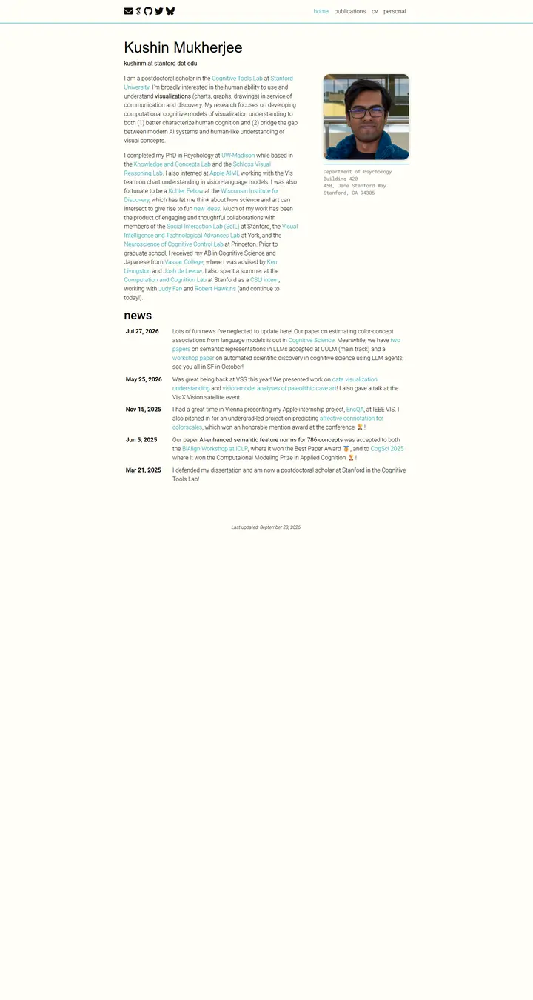

Kushin Mukherjee
Cream notepaper with a teal pen: light Roboto prose, a rounded portrait over a typewritten address, and a dated news ledger ruled in turquoise.

Checked against the rendered page. Name and email line declare Raleway, which no stylesheet loads, so they render in the generic sans (Arial on Windows).
Why it is here
Tidy cream background with a teal accent, a rounded portrait with a monospace address caption, and a clean dated news table. Small touches make the template its own.
Overview
Color Palette
Typography
Roboto
Kushin Mukherjee, cognitive science / visual communication
Abstract · Method · Results · BibTeX — 0123456789
Roboto Mono
Kushin Mukherjee, cognitive science / visual communication
Abstract · Method · Results · BibTeX — 0123456789
generic sans-serif
Kushin Mukherjee, cognitive science / visual communication
Abstract · Method · Results · BibTeX — 0123456789
Spacing & Shape
Page Modules
Guidelines
More like this

David B. Lindell
A lab notebook typeset by a careful editor: Source Serif prose, Source Sans labels, one clear blue, and every paper filed with its photograph.

Amir Bar
A clean faculty prospectus in Imperial blue: Inter on white, pill links, and paper cards that lift a few pixels when you reach for them.

Anagh Malik
The Barron table, warmed with apricot: Lato at 14px, blue links that flash orange, and the papers that matter sitting in a band of late-afternoon light.

Christoph Feichtenhofer
A conference-hall banner in Facebook blue, then a long ledger of papers in red ink, green venues and justified grey abstracts.

David Novotny
A harbour at dusk beside a quiet reading room: a fixed teal-to-midnight panel with right-aligned contact lines, and soft grey text with tangerine links on white.

Jaeyeon Kim
A quiet seminar handout in light Roboto, where one red-highlighted question and a row of mint tags are the only raised voices.